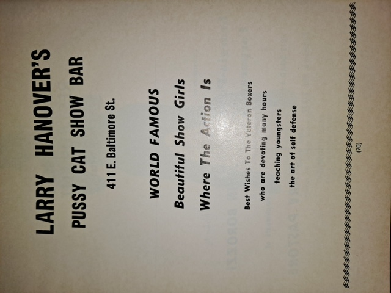

ELI “TED” HANOVER · THE CITY THAT SHAPED HIS STORY
A life written into Baltimore.
From the streets around Patterson Park to the working harbor, crowded entertainment district, neighborhood gyms, and family supper tables—Baltimore was more than the setting of Eli Hanover’s life. It was part of the story.
A family history in its city context · Archival captions and personal recollections are being reviewed.


01 / EAST BALTIMORE
The neighborhoods that made a hometown.
Eli “Ted” Hanover was born in 1921 in East Baltimore, near Patterson Park. The area’s shops, rowhouses, sidewalks, schools, and community gathering places formed the everyday landscape of his childhood.
The park itself predates his life by nearly a century. William Patterson donated land in 1827 for a public walk, and successive generations made it part of the neighborhood’s shared identity.
In a family biography, these familiar places deserve attention alongside the better-known public milestones: they are where work, friendship, recreation, and memory intersect.
Follow Eli’s early years02 / PORT CITY
The harbor, the ships, and the working city.
For much of Baltimore’s history, the waterfront supported shipping, warehouses, industry, and the people whose work kept the port moving. The tourist-oriented Inner Harbor familiar today was a later transformation of that industrial landscape.
For Eli, service in the Merchant Marine connects his personal history to that broader maritime world. The details of individual voyages belong in the documented Life Story; here we explore the city and labor environment surrounding them.
Explore the Merchant Marine chapter ↗03 / ENTERTAINMENT & CHANGE
The Block: another side of Baltimore.
The East Baltimore Street entertainment district changed repeatedly over the twentieth century—from commercial streets and theaters to the nightlife area later known as “The Block.” Its venues were part of the changing cultural geography of the city.
Beyond the neon
The Gayety Theatre opened in 1906 and became one of the defining architectural landmarks of the district. Historical surveys document how the surrounding business mix and reputation evolved over the decades.
Eli’s association with the Jewel Box and Baltimore entertainment venues is part of the family story. We keep those personal claims distinct from independently documented history of The Block until each establishment and date has been corroborated.
Explore The Block’s history ↗
Historical sources: Library of Congress: Gayety Theatre · Explore Baltimore Heritage.
04 / THE CITY AT RINGSIDE
Small halls. Big ambitions.
In the story preserved by Eli’s family, Baltimore’s boxing community included neighborhood gyms, union halls, promotional posters, and nights when local fighters stepped into the ring.
Eli’s role as a promoter belongs within that wider local sporting culture—not as the whole story of Baltimore boxing, but as one personal window into it.
The promoter years
The Jewel Box, fight nights, local promotion, and the years when Eli’s personal and public lives intersected.
Read Chapter 4 →Explore Baltimore venues →05 / FOLLOW THE THREADS
One city. Many stories.
These connections lead into the existing historical chapters and collections without duplicating the family archive.
Family, neighborhood, and the formative years.
↗02 / MARITIMEFrom harbor to seaMerchant Marine service and the world beyond Baltimore.
↗03 / BOXINGFight nights and local legendsPromoters, programs, fighters, and Baltimore boxing.
↗04 / THE COLLECTIONPhotographs and filmsApproved archive materials from across the website.
↗